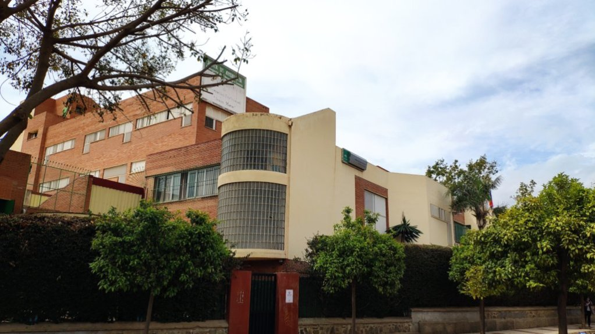

"Heredero de una tradición educativa que se remonta a 1928, el IES Politécnico Jesús Marín se erige como un referente histórico de la Formación Profesional en Málaga, impulsando el desarrollo técnico y cultural de nuestro entorno. Situado en la zona de Carranque, el centro ha formado a generaciones de profesionales altamente cualificados gracias a la dedicación de un equipo docente en constante innovación.
En la actualidad, el instituto destaca por su envergadura y excelencia, impartiendo todas las modalidades de Bachillerato (incluyendo Artes, Ciencias y Tecnología, y Humanidades) y consolidándose como líder en Formación Profesional. Nuestra oferta abarca múltiples familias profesionales como Informática, Electricidad y Electrónica, Fabricación Mecánica, Instalación y Mantenimiento, e Imagen y Sonido, ofreciendo Ciclos de Grado Medio, Superior y Cursos de Especialización."

“El periodo de vacaciones de Semana Santa comenzará el 29 de marzo hasta el 5 de abril”